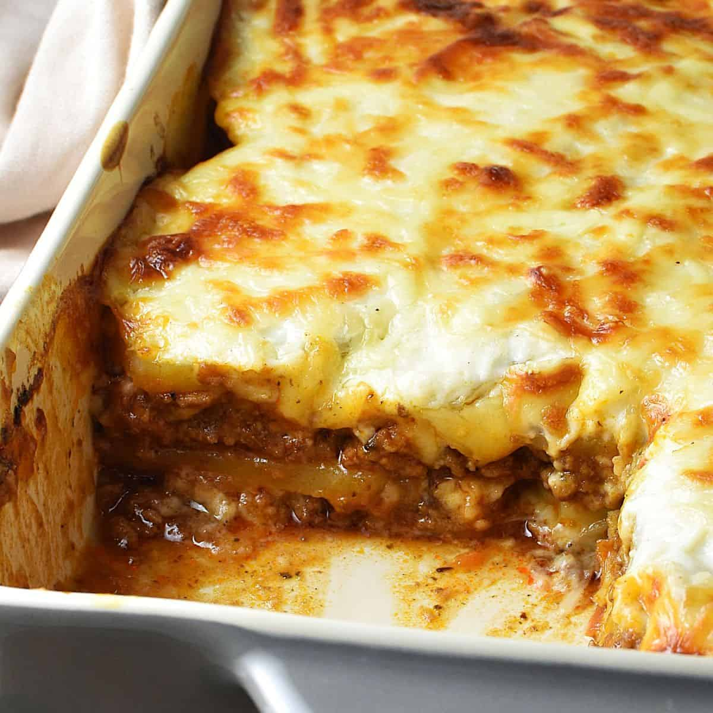

Mashed Potato Lasagna

Unlike traditional lasagna, it is a bit easier... and also in a way harder as
you need to prep a number of things. Unless..of course, you decided to use
pre-made things. This version of lasagna is my favourite since I would pick
potatoes over lasagna any other day.
Ingredients :
- potato
- milk
- pasta sauce
- mozarella and cheddar cheese mix
Steps :
- Cut your potatoes to quarters and boil them until they softens.
- Move the potatoes in a bowl and mash them up with a masher. (or you can blend them as well)
- Add butter, salt and milk to your liking.
- In a tray, layer it with the potato first. Then pasta sauce, cheese and repeat until you hit the top.
- Top the last layer with a layer of cheese to your desired heart attack amount,
- Bake the lasagna in the oven at 180C until the cheese melt and browns.
- Serve and enjoy.
Home